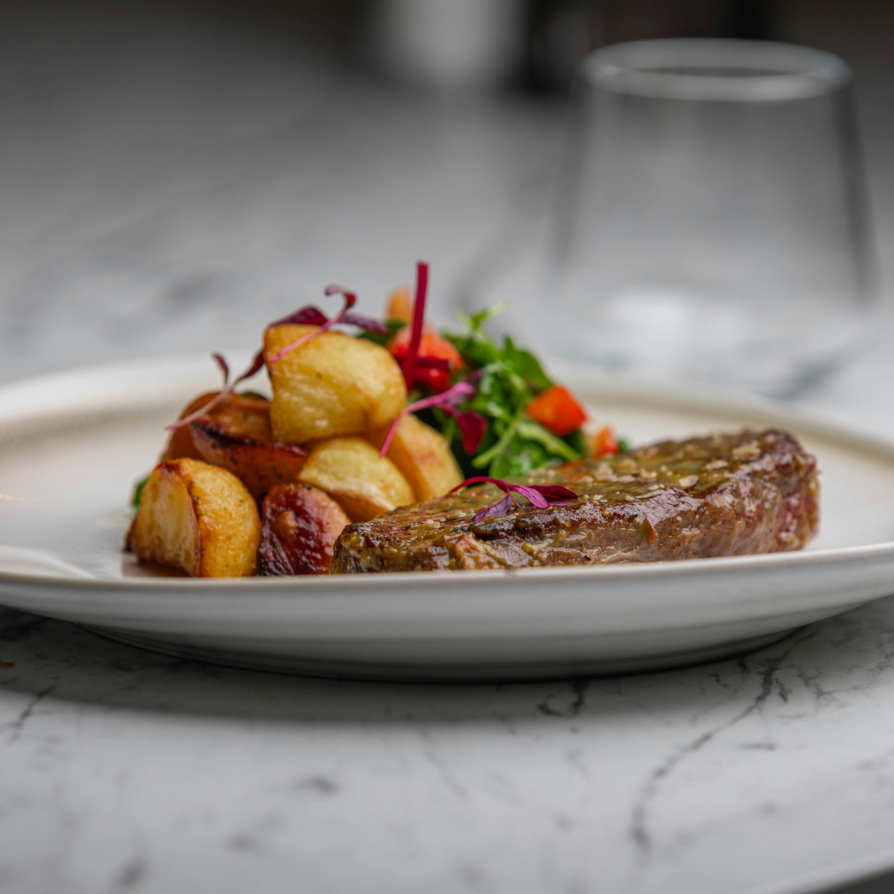
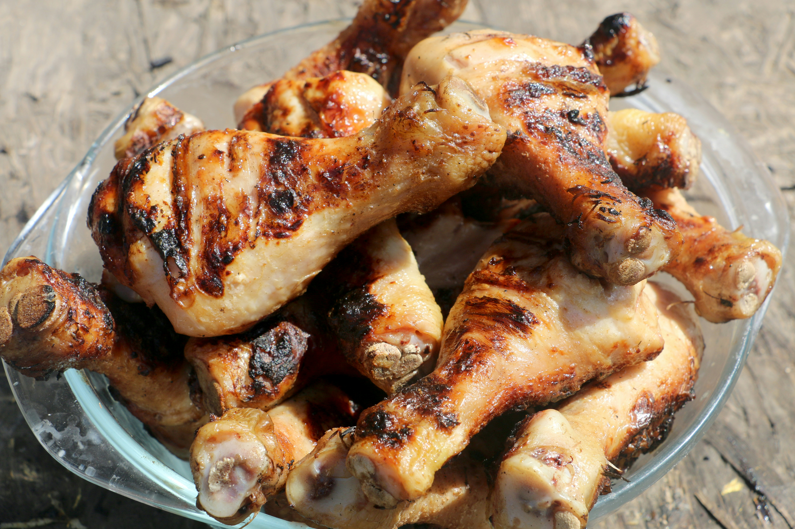

Simple Sirloin Steak
Ingredients:
- 2 sirloin steaks
- 1 tbsp sunflower oil
- 1 tbsp butter
- 1 garlic clove
Instructions:
- Pat steaks dry, season with salt and pepper. Heat oil in pan.
- Add butter and garlic, sear steaks, turning every 30 secs to 1 min.
- Cook to desired doneness: rare 3 mins, medium 4-5 mins, well done 7-8 mins.

Chicken Tikka Masala Pizzas
Ingredients:
- 1 small red onion
- 4 garlic and coriander naan
- 4 chicken breasts
- 2 green peppers
- 2-3 tbsp tikka masala paste
- 150ml natural yogurt
- 1 green chilli
- 1 small pack coriander
Instructions:
- Heat oven, prep onion and naan.
- Cook chicken and peppers with curry paste.
- Top naans with yogurt, then chicken, onion, chilli, coriander.

Chorizo & Chilli Pepper Pasta
Ingredients:
- 200g penne
- 100g chorizo
- 400g cherry tomatoes
- 2-3 guindilla chillies
- ½ small pack basil
Instructions:
- Cook pasta, drain, set aside.
- Cook chorizo, add tomatoes, sugar, seasoning. Toss pasta with sauce and basil.

Winter Vegetable & Lentil Soup
Ingredients:
- 85g red lentils
- 2 carrots
- 3 sticks celery
- 2 tbsp tomato purée
- 3 large garlic cloves
- 1 tbsp vegetable bouillon
- 1 tsp ground coriander
Instructions:
- Combine all ingredients with water, simmer 30 mins.
- Serve as-is or blitz part for creamier texture.

Creamy Chicken Pasta
Ingredients:
- 300g dried penne
- 2 tsp olive oil
- 1 garlic clove
- 75g baby spinach leaves
- 250g soft cheese
- 4 cooked chicken breasts
- small bunch of parsley
Instructions:
- Cook the pasta following pack instructions. Reserve 100ml of the water and drain the pasta in a colander.
- Meanwhile, heat the oil in a frying pan on a medium heat and fry the garlic and spinach for 3 mins until wilted. Add the soft cheese and heat until melted. Stir in most of the parmesan, then add the shredded chicken, peas and some of the pasta water. Bring to the boil and bubble for 2-3 mins until the chicken and peas are completely heated through.
- Add the pasta and stir until combined. Add more pasta water to loosen the sauce, if needed. Remove from heat, sprinkle over the remaining parmesan and parsley or basil to serve.

Halloumi with bulgur, chickpea & rocket salad
Ingredients:
- 200g bulgur wheat
- 250g pack halloumi cheese
- 5 tbsp olive oil
- zest and juice 2 limes
- 1 tsp sweet paprika
- 400g can chickpea
Instructions:
- Cook the bulgur wheat following pack instructions. Meanwhile, in a non-stick pan, fry the halloumi in 2 tbsp oil for 3-4 mins on each side until golden and starting to crisp up.
- Mix together the lime zest and juice, paprika and remaining olive oil, and stir this through the bulgur wheat using a fork. Toss in the chickpeas and rocket, and serve with the fried halloumi slices.

Air Fryer Chicken Thighs
Ingredients:
- 1 tsp paprika
- ½ tsp mixed herbs
- ½ tsp garlic granules
- 4 chicken thighs
- 1 tsp olive oil
Instructions:
- Combine the paprika in a bowl with the herbs and garlic granules, if using, together with ½ tsp salt and ½ tsp ground black pepper. Scatter onto a plate. Rub the chicken thighs with the oil, then coat in the spice mix.
- Put in the basket of your air fryer and cook, skin-side down, for 10 mins at 180C. Turn over and cook for a further 10-15 mins until cooked through and the skin is crispy. To check they are cooked, pierce the thickest part of the thigh with a knife to see if the juices run clear. Remove from the air fryer immediately to stop the skin from softening.

Quick Omelette
Ingredients:
- 2 eggs
- ½ tbsp olive oil
- 1 tbsp butter
- 15g mature cheddar
Instructions:
- Crack the eggs into a jug and whisk well with a fork. Season with a pinch of salt.
- Heat the oil and butter in a medium non-stick frying pan over a medium-low heat. Once the butter has started to foam, pour in the eggs and tilt to cover the base of the pan. Using a spatula, gently draw in the eggs from four points so there are folds in the centre.
- Do this once or twice, then leave the eggs to cook gently for 2-3 mins, until there's a little raw egg still in the middle. Sprinkle over the cheese and, using your spatula, gently fold the omelette in half. Switch off the heat and let the residual heat from the pan melt the cheese for 1 min.